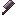

下界合金菜刀
Netherite Kitchen Knife
英文名: Netherite Kitchen Knife命名空间 ID:
kaleidoscope_cookery:netherite_kitchen_knife类型: 物品所属模组: Kaleidoscope Cookery资料检索: MC百科检索「下界合金菜刀」所属标签
#bakery:knives#c:tools/knives#farmersdelight:tools/knives#guardvillagers:convertible_guard_items#kaleidoscope_cookery:cookery_mod_items#kaleidoscope_cookery:kitchen_knife#minecraft:breaks_decorated_pots#minecraft:enchantable/durability#minecraft:enchantable/fire_aspect#minecraft:enchantable/sharp_weapon#minecraft:enchantable/sword#minecraft:enchantable/vanishing#minecraft:enchantable/weapon#minecraft:swords
合成获得 (1)


原始 JSON
{
"type": "minecraft:smithing_transform",
"addition": {
"item": "minecraft:netherite_ingot"
},
"base": {
"item": "kaleidoscope_cookery:diamond_kitchen_knife"
},
"result": {
"count": 1,
"id": "kaleidoscope_cookery:netherite_kitchen_knife"
},
"template": {
"item": "minecraft:netherite_upgrade_smithing_template"
}
}用于合成 (1)
bakery:blank_cake_interaction[Let's Do] Bakery
原始 JSON
{
"type": "bakery:blank_cake_interaction",
"stage": "CAKE",
"ingredient": {
"tag": "bakery:knives"
},
"result": {
"set_state": {
"cake": false,
"cupcake": true,
"cookie": false
},
"sound": "bakery:cake_cut",
"particles": true
},
"priority": 50
}